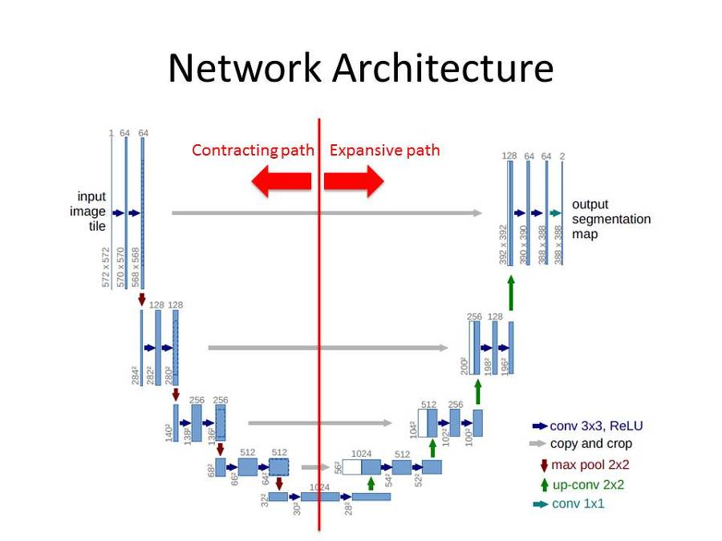

In this project, a convolutional neural network was trained using Brain MRI images together with manual FLAIR abnormality segmentation masks . The goal of the project is to segment (outline) tumors in the brain to ease the workload of radiologists.
The Model used for prediction was a convolution neural network designed for image segmentation called a U-Net The model consists of 5 downsampling (convolutional) layers followed by 4 upsampling layers followed by a convolutional activation layer whose determines how likely a given pixel is part of a cancerous tumor.
| Accuracy | F1 Score |
|---|---|
| 89% | 88% |
for more information, see my powerpoint presentation
or the training scripts
to view all scripts involved in building this tool, see my github page